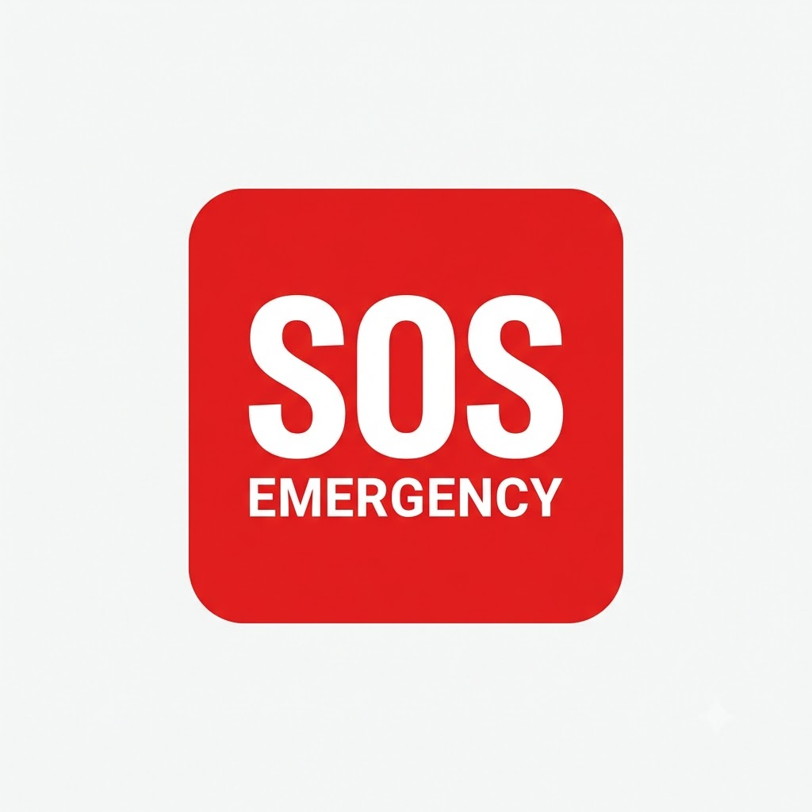
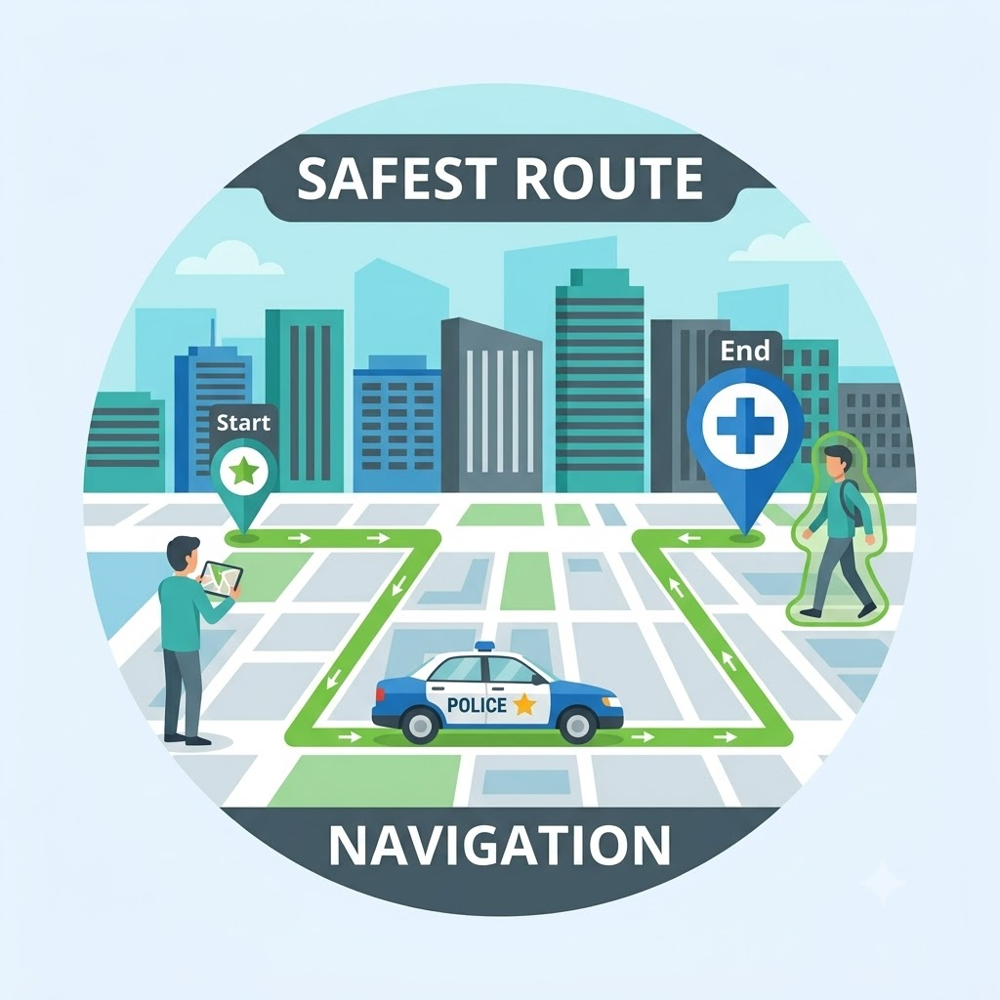
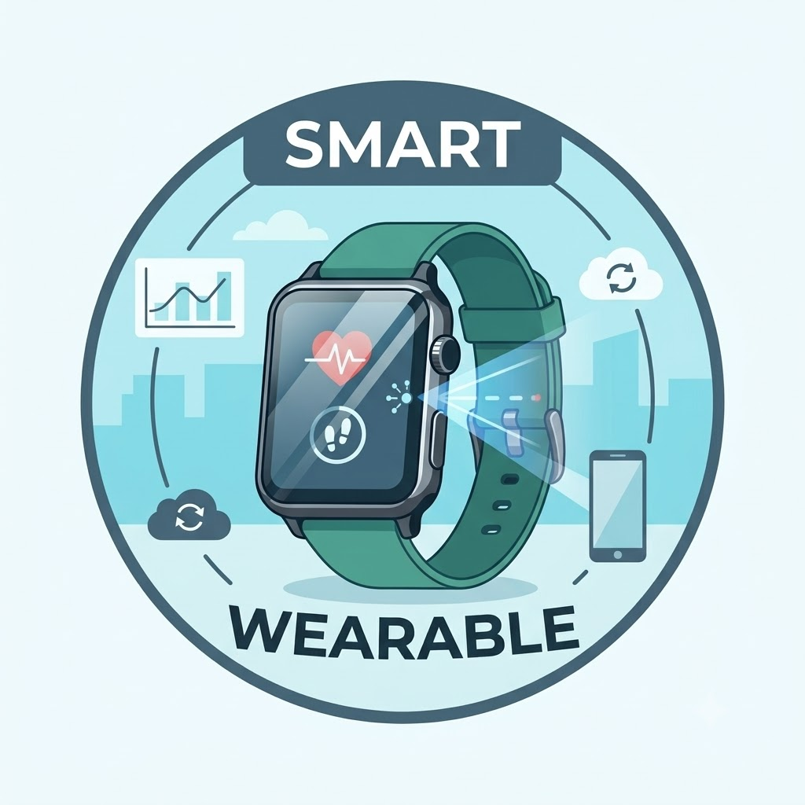
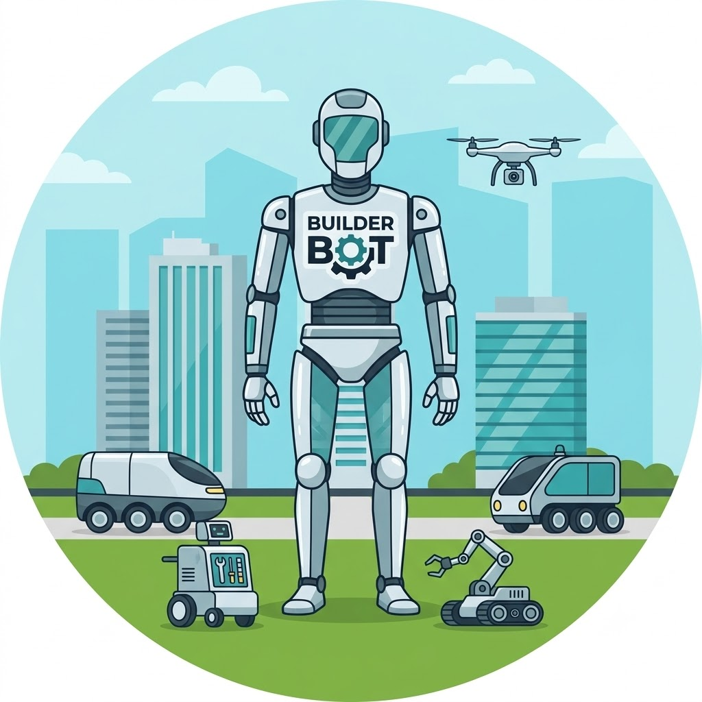
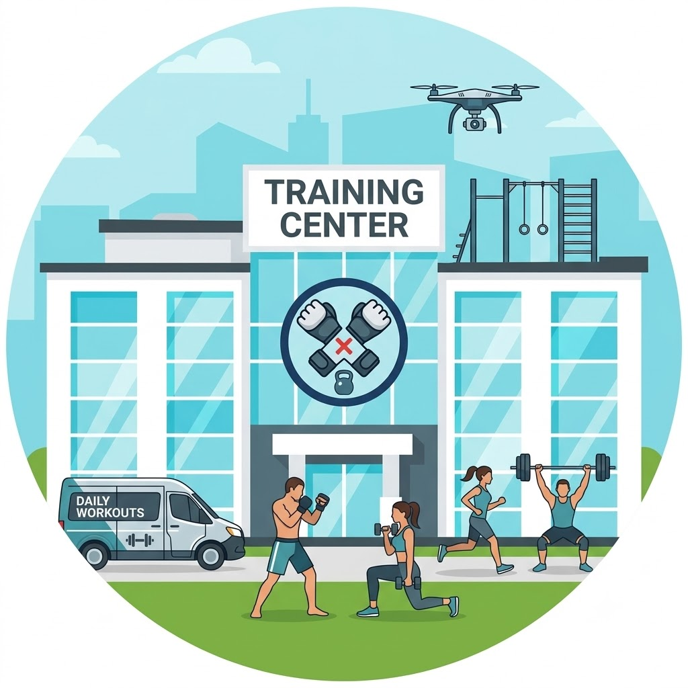
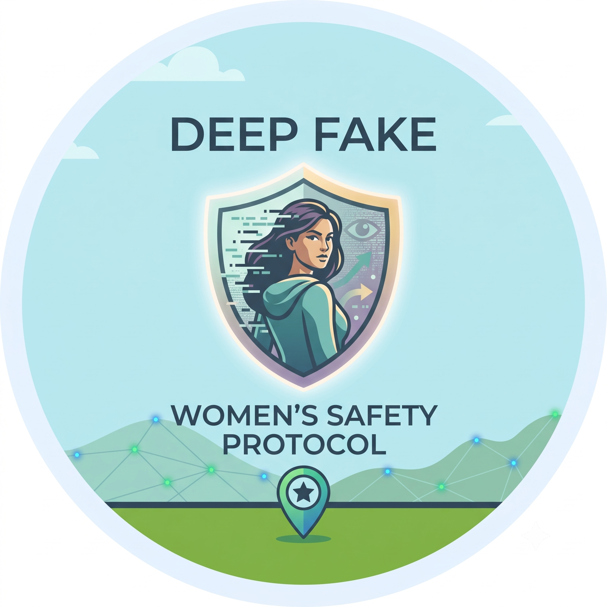

Welcome to the SAHARA Women's Safety Ecosystem

Emergency SOS
Instant one-touch emergency SOS activation connecting you with local police dispatch and nearby verified volunteer responders in real time.

Safest Route Navigation
AI-powered safe navigation analyzing street lighting, CCTV density, crime heatmaps, and verified safe transit corridors across the city.

SAHARA Smart Wearable
Real-time biometric stress monitoring, simulated fall detection, and rapid discreet emergency escalation directly from smart wearables.

Safety Assistant Concierge
100% offline, multilingual voice safety concierge supporting Hindi, Punjabi, Marathi, and English to route you directly to the right tool.

MMA & Safety Workshops
Interactive practical self-defense masterclasses, 10-minute Daily MMA awareness habits, and certified instructor-led safety workshops.

AI Deepfake Detection
Advanced AI-powered media forensics to detect manipulated photos, synthetic deepfake videos, face swaps, and voice cloning to protect your digital identity.
SAHARA is a Personal Safety Intelligence platform that combines AI-powered safety prediction, real-time monitoring, community intelligence, and emergency response into one ecosystem. It uses 9 AI models to predict risks, plan safer routes, detect distress signals, and connect you with verified volunteers — all designed to prevent, predict, protect, and respond.
SafeMap uses AI Model #1 (Safety Risk Prediction) and Model #9 (Safe Route Optimization) to analyze road segments based on factors like streetlight coverage, CCTV availability, police proximity, mobile network coverage, and community-reported incidents. It generates three route options — Safest, Balanced, and Fastest — prioritizing the safest practical route based on available safety signals.
When you activate SOS, the system immediately captures your live location, notifies your trusted contacts, matches you with the nearest verified volunteer, and tracks the responder's status in real-time — from acceptance to arrival to resolution. Manual SOS is always treated as the highest-priority emergency signal and cannot be downgraded by AI.
SAHARA uses multiple AI models working together through Safety Fusion (Model #8). Journey anomalies are detected by Model #2, wearable distress signals by Model #3, and voice distress by Model #7. When multiple signals indicate possible danger, the system triggers a Safety Check — asking "Are you okay?" — before escalating. Normal activities like running do not automatically trigger emergencies.
The Virtual Wearable simulates a safety-monitoring wearable device, tracking telemetry like heart rate, accelerometer, gyroscope, movement patterns, GPS, and network status. AI Model #3 analyzes this telemetry to detect possible distress scenarios — including falls, unusual movement, and emergency situations — all within a clearly marked simulation environment.
Users can submit safety reports about infrastructure issues, harassment, suspicious activity, or road safety concerns. AI Model #5 classifies these reports, Model #6 detects potentially duplicate or related incidents, and an admin verifies them before they appear on SafeMap. AI suggestions are never treated as confirmed incidents without human verification.
Cyber Safety lets you analyze suspicious messages, links, or text for potential threats like phishing, scams, harassment, stalking, or financial fraud using AI Model #4. The system provides guidance and threat categorization. You can optionally save relevant material to the Evidence Vault for secure record-keeping. The system identifies potential threats — it never claims certainty.
The Evidence Vault provides private, secure storage for screenshots, images, documents, and cyber safety evidence. Each upload is validated, integrity-verified with SHA-256 hashing, and stored with metadata. Evidence is private by default — only authorized users can access it, and unauthorized requests are rejected. Evidence can be linked to incidents for reference.
Volunteers register, undergo admin verification, and once approved, can set their availability status. When an SOS is triggered, the system matches the nearest available verified volunteer who can accept the request, respond in real-time, and provide on-ground assistance. Unverified, suspended, or offline volunteers cannot accept SOS requests.
The current version of SAHARA is a prototype / simulation. It is NOT connected to 112, real police dispatch, or any real emergency services. All emergency scenarios, volunteers, incidents, and telemetry within the demo are simulated using synthetic data. The platform is designed to demonstrate the concept and architecture for future real-world deployment.
Yes, SAHARA is completely free. The platform is built with the mission of empowering personal safety through AI-driven intelligence, community collaboration, and real-time emergency response — accessible to everyone without any charges.
© 2026 SAHARA. All rights reserved.